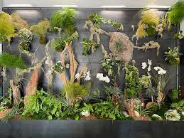
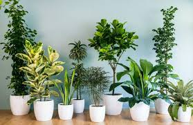
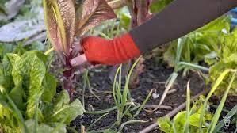

Transform your environment with our premium plant design services and expert horticultural advice.
Book a ConsultationOur designers create personalized plant arrangements tailored to your space, light conditions, and aesthetic preferences. We take into account your lifestyle and the functionality of the space to ensure that the plants not only look beautiful but also thrive.
 Explore Design OptionsWe help you choose the perfect plants for your environment, considering factors like maintenance level, air purification, and visual impact. Our extensive catalog includes a variety of indoor and outdoor plants suitable for any space.
 View Plant CatalogOur team handles everything from delivery to installation, plus ongoing maintenance plans to keep your plants thriving. We offer tailored care schedules to ensure your plants receive the right amount of water, light, and nutrients.
 See Maintenance Plans"Rootelier transformed my living room into a beautiful green space. Their team was professional and attentive to my needs!"
- Jane D.
"I love my new office plants! The installation was seamless, and the plants are thriving."
- Mark T.
"The consultation service was incredibly helpful. I learned so much about plant care!"
- Sarah L.
"Their workshops are fun and informative. I can't wait to attend the next one!"
- Tom R.
Discover essential tips to keep your indoor plants thriving and healthy throughout the year.
Read MoreLearn how to select plants that fit your lifestyle and enhance your living space.
Read MoreExplore the positive effects of plants on productivity and well-being in the workplace.
Read More1. Always choose the right plants for your environment. Consider your local climate, sunlight availability, humidity, and temperature. Native and climate-adapted plants often perform best with less effort.
2. Water your plants according to their specific needs. Overwatering is a common mistake that can cause root rot. Learn the watering frequency and depth each plant prefers, and use well-draining soil.
3. Regularly check for pests and diseases to keep your plants healthy. Look for signs like wilting, holes in leaves, sticky residue, or unusual spots, and act quickly with organic or chemical treatments.
4. Fertilize your plants during the growing season to promote growth. Use the right type of fertilizer—organic compost, slow-release granules, or liquid feed—depending on your plant’s needs.
5. Prune dead leaves and branches to encourage new growth. Pruning improves air circulation, helps plants focus energy on healthy parts, and keeps your garden neat and attractive.
6. Use mulch around plants to retain soil moisture, regulate temperature, and reduce weed growth. Organic mulches like wood chips or straw also break down and enrich the soil over time.
7. Rotate crops and plants in garden beds annually to prevent nutrient depletion and reduce the risk of pests and diseases building up in the soil.
8. Ensure proper drainage in pots and garden beds. Standing water can suffocate roots. Use pots with holes and avoid compacted soil that retains too much moisture.
9. Choose companion planting techniques to naturally repel pests and promote healthy plant growth. For example, marigolds help deter nematodes and aphids when planted near vegetables.
10. Keep your garden tools clean and sharp. Sanitized tools prevent the spread of disease from plant to plant, and sharp pruners make cleaner cuts that heal faster.
The information provided on this website is for general informational purposes only. Rootelier makes no representations or warranties of any kind, express or implied, about the completeness, accuracy, reliability, suitability, or availability with respect to the website or the information, products, services, or related graphics contained on the website for any purpose.
At Rootelier, we prioritize our customers' satisfaction. We are dedicated to providing high-quality services and products that meet your needs and exceed your expectations. Your feedback is invaluable to us, and we continuously strive to improve our offerings.